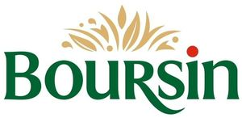

Trade Mark Journal No.2025/010 7 March 2025
WO0000001841279 (29,30)
Office of origin: France
Date of International Registration:18 December 2024
Date of designation in the UK:
18 December 2024

The mark contains the colours green: Pantone 349 C, red: Pantone 485 C and golden: Pantone 7509 C
International priority date claimed: 18 December 2024
(France)
(5107049)
- Class 29
- Meat, poultry and game; meat extracts; charcuterie, ham; fish, crustaceans (not live), seafood (not live), shellfish (not live); preserved, dried and cooked fruits, mushrooms, vegetables and legumes; cooked dishes based on meat, fish, fruit, mushrooms, vegetables; jellies, jams, compotes; eggs, milk, butter, cheese, specialty cheese products, yogurts; dairy products and whey; cocoa butter; edible oils and fats; consommés, potages, soups, broths; mixtures for making consommés, potages, soups, broths; chips; fruit salads, vegetable salads; culinary preparations, cooked dishes and spreads based on meat, poultry, game, meat extracts, charcuterie, ham, fish, fish extracts, non-living crustaceans, non-living seafood, non-living shellfish; culinary preparations, cooked dishes and spreads based on shellfish extracts, seafood extracts, crustacean extracts, eggs, prepared mushrooms, prepared vegetables, prepared legumes, prepared fruits, flowers, namely dried edible flowers, milk, dairy products, cheeses, butter, dairy products, yogurts, jellies, jams and/or compotes; milk-based beverages; soy milk (milk substitute); dairy-based beverages; preparations for beverages based on dairy products or substitutes thereof; milk substitutes for beverages; beverages based on milk substitutes; coconut milk; meat substitutes based on plants; cheese substitutes based on plants; milk substitutes based on plants; desserts based on milk, vegetable milk and dairy substitutes.
- Class 30
- Frozen yogurt based on vegetable ingredients [edible ices]; sauces (condiments); salad dressings; mayonnaise; food porridge based on milk, vegetable milk and dairy substitutes.
BEL
Representative: Monsieur PIAT Gilbert ATMARK, 16 rue Milton, F-75009 PARIS, FRANCE